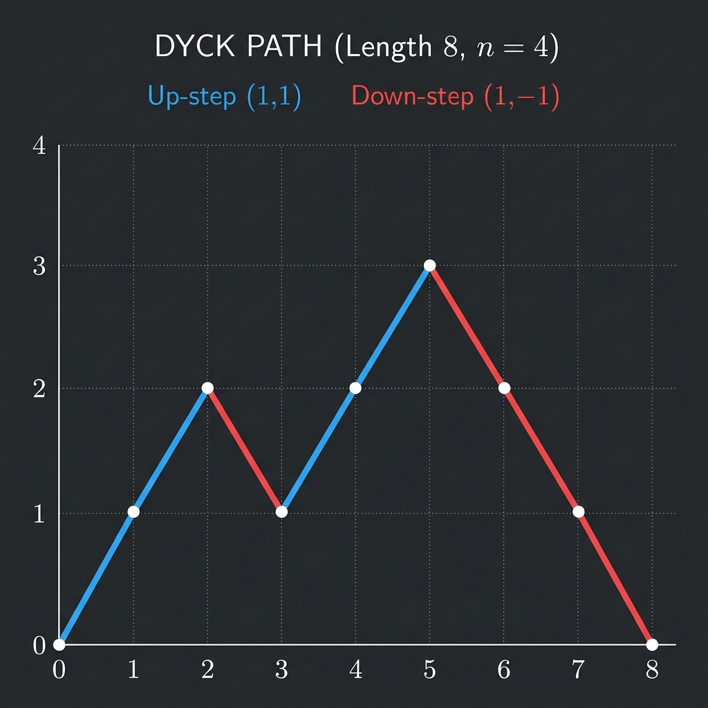

Catalan Generating Function Relation

Mathematical Exposition
In Combinatorics, the Catalan numbers $C_n = \frac{1}{n+1}\binom{2n}{n}$ count numerous combinatorial structures, most notably Dyck paths. A Dyck path of semi-length $n$ is a path on a grid from $(0,0)$ to $(2n,0)$ consisting of steps $(1,1)$ (up) and $(1,-1)$ (down) that never falls below the x-axis.
The generating function for the Catalan numbers is defined as the formal power series:
$$C(X) = \sum_{n=0}^{\infty} C_n X^n = 1 + X + 2X^2 + 5X^3 + 14X^4 + 42X^5 + \dots$$By decomposing any Dyck path uniquely at its first return to the x-axis, we obtain the fundamental algebraic recurrence relation:
$$C(X) = 1 + X \cdot C(X)^2$$Series Reversion & Lagrange Inversion
If we define the power series $h(X) = X \cdot C(X)$, the quadratic relation can be rewritten as:
$$h(X) - h(X)^2 = X \cdot C(X) - X^2 \cdot C(X)^2 = X \cdot (C(X) - X \cdot C(X)^2) = X \cdot 1 = X$$This means that under series composition, the series $h(X)$ is the compositional inverse (or series reversion) of the polynomial $f(X) = X - X^2$. Therefore:
$$\text{substInv}(X - X^2) = h(X) = X \cdot C(X)$$Taking the coefficient of $X^{n+1}$ on both sides yields:
$$\text{coeff}(n+1, \text{substInv}(X - X^2)) = \text{coeff}(n, C(X)) = C_n = \frac{1}{n+1}\binom{2n}{n}$$Lean 4 Formalization
Our formal proof in Lean 4 utilizes Mathlib's formal power series library (PowerSeries). The key steps are:
- Establishing the relation
hCshowing that the mapped catalan series satisfies $C = 1 + X \cdot C^2$. - Defining the shifted series $h = X \cdot C$ and proving the identity $h - h^2 = X$ via algebraic manipulation.
- Utilizing compositional inverse properties (
substInvandsubst) to prove $g = \text{substInv}(X - X^2)$ equals $h$. - Extracting the $(n+1)$-th coefficient and showing it simplifies to $\frac{1}{n+1}\binom{2n}{n}$ using binomial coefficient identities.
import Mathlib
import Mathlib.RingTheory.PowerSeries.Catalan
open PowerSeries
namespace Submission
theorem substInv_X_sub_X_sq_eq_catalan (n : ℕ) :
haveI : Invertible (coeff 1 ((X : ℚ⟦X⟧) - X ^ 2)) := by
simp [coeff_X, coeff_X_pow]; exact invertibleOne
coeff (n + 1) (substInv ((X : ℚ⟦X⟧) - X ^ 2)) =
(Nat.choose (2 * n) n : ℚ) / (↑n + 1) := by
let f : ℚ⟦X⟧ := X - X ^ 2
have hf_coeff : coeff 1 f = 1 := by simp [f, coeff_X, coeff_X_pow]
have hf_const : constantCoeff f = 0 := by simp [f]
haveI hf_inv : Invertible (coeff 1 f) := by
rw [hf_coeff]
exact invertibleOne
let C : ℚ⟦X⟧ := catalanSeries.map (Nat.castRingHom ℚ)
have hC : C = 1 + X * C ^ 2 := by
have h := catalanSeries_sq_mul_X_add_one
apply_fun (PowerSeries.map (Nat.castRingHom ℚ)) at h
simp [map_add, map_mul, map_one, map_pow, map_X] at h
rw [show C = catalanSeries.map (Nat.castRingHom ℚ) from rfl]
rw [mul_comm, add_comm] at h
exact h.symm
let h : ℚ⟦X⟧ := X * C
have h_const : constantCoeff h = 0 := by
simp [h]
have hh : h - h ^ 2 = X := by
calc h - h ^ 2 = X * C - (X * C) ^ 2 := rfl
_ = X * C - X ^ 2 * C ^ 2 := by ring
_ = X * (C - X * C ^ 2) := by ring
_ = X * 1 := by rw [show C - X * C ^ 2 = 1 by linear_combination hC]
_ = X := by simp
have h_has_subst_h : HasSubst h := HasSubst.of_constantCoeff_zero' h_const
have hf_has_subst : HasSubst f := HasSubst.of_constantCoeff_zero' hf_const
have h_subst_h : subst h f = X := by
rw [show f = X - X ^ 2 from rfl]
rw [subst_sub h_has_subst_h, subst_X h_has_subst_h, subst_pow h_has_subst_h, subst_X h_has_subst_h]
exact hh
let g : ℚ⟦X⟧ := substInv f
have hg_const : constantCoeff g = 0 := constantCoeff_substInv f
have hg_has_subst : HasSubst g := HasSubst.of_constantCoeff_zero' hg_const
have h_subst_g' : subst f g = X := subst_substInv_left f hf_const
have hg_h : g = h := by
calc g = subst X g := (X_subst g).symm
_ = subst (subst h f) g := by rw [h_subst_h]
_ = subst h (subst f g) := (subst_comp_subst_apply hf_has_subst h_has_subst_h g).symm
_ = subst h X := by rw [h_subst_g']
_ = h := subst_X h_has_subst_h
have h_res : coeff (n + 1) h = (Nat.choose (2 * n) n : ℚ) / (↑n + 1) := by
simp [h, coeff_succ_X_mul]
rw [show (coeff n) C = catalan n by simp [C]]
have h_id := succ_mul_catalan_eq_centralBinom n
rw [Nat.centralBinom_eq_two_mul_choose] at h_id
have h_id_q : (↑(catalan n) * (↑n + 1) : ℚ) = ↑((2 * n).choose n) := by
rw [mul_comm]
norm_cast
field_simp
exact h_id_q
refine Eq.trans ?_ h_res
refine Eq.trans ?_ (congr_arg (coeff (n + 1)) hg_h)
congr 1
unfold g
congr 1
exact Subsingleton.elim _ _
end Submission